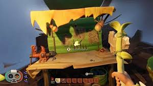
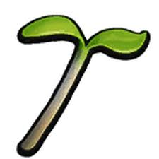
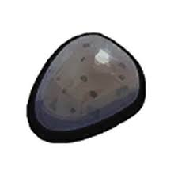

Home
building
killing bugs
survival
Friends
researching items
fighting bosses
crafting is important because if your not crafting your going to die alot of times. this is what you need to build

Use an axe to cut down a green blade of grass.
Pick up a grass plank from the downed grass and take it to the Analysis Computer.
Analyze the Grass Plank to unlock the workbench blueprint.
Use 3x Grass Planks, 4x Sprigs, and 2x Sap to craft a workbench in your Crafting menu.
to find this Analysis Computer/lab get out of the hole your in and once your out go left go though the leaf and you will see it.
to make an axe you don't have to use a workbench for this all you need are three Sprigs, two Pebblets, and one Woven Fiber and this are what they look like.
springs

Pebblets

you need plant fiber to make woven fiber

after you got that you can make woven fiber